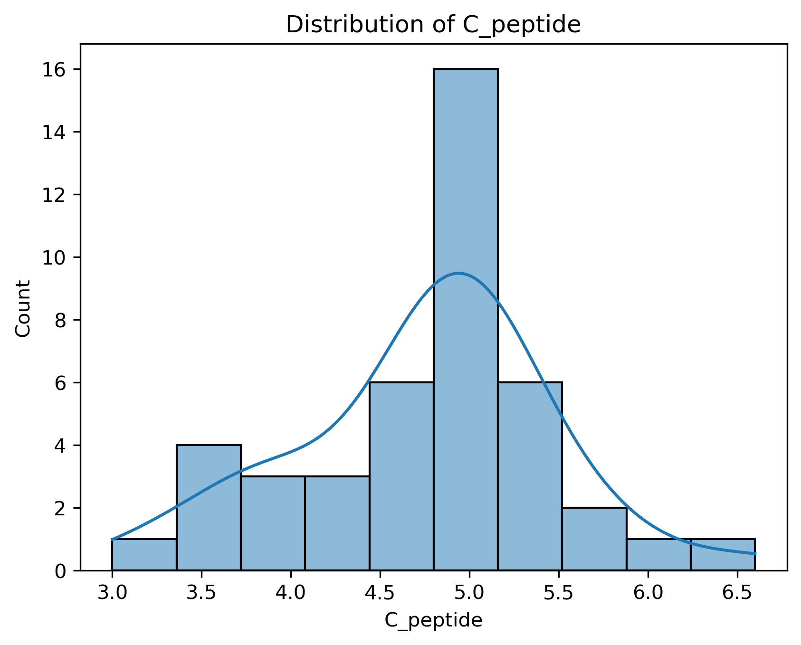
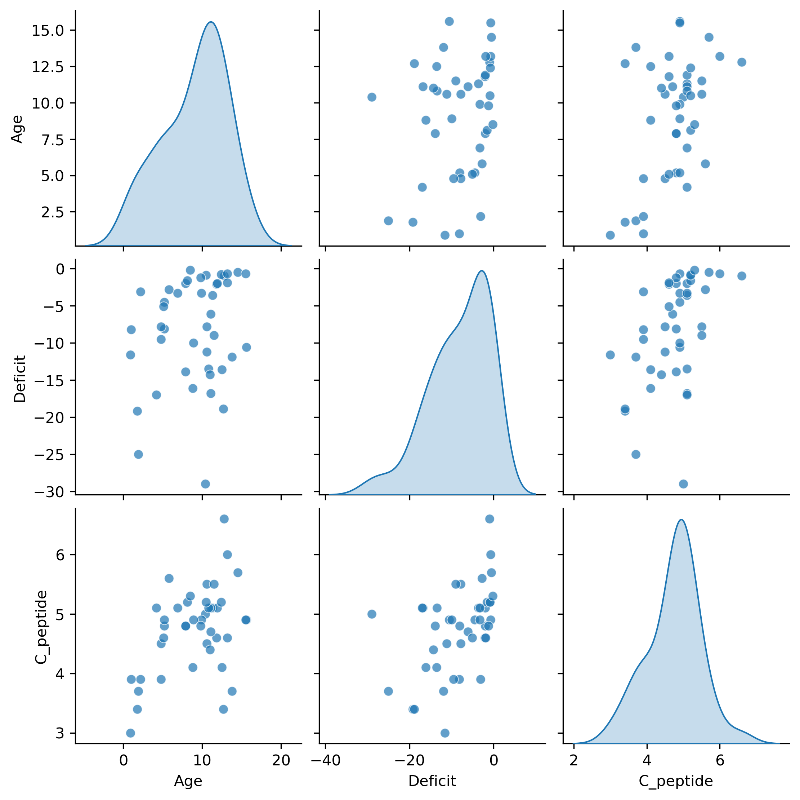
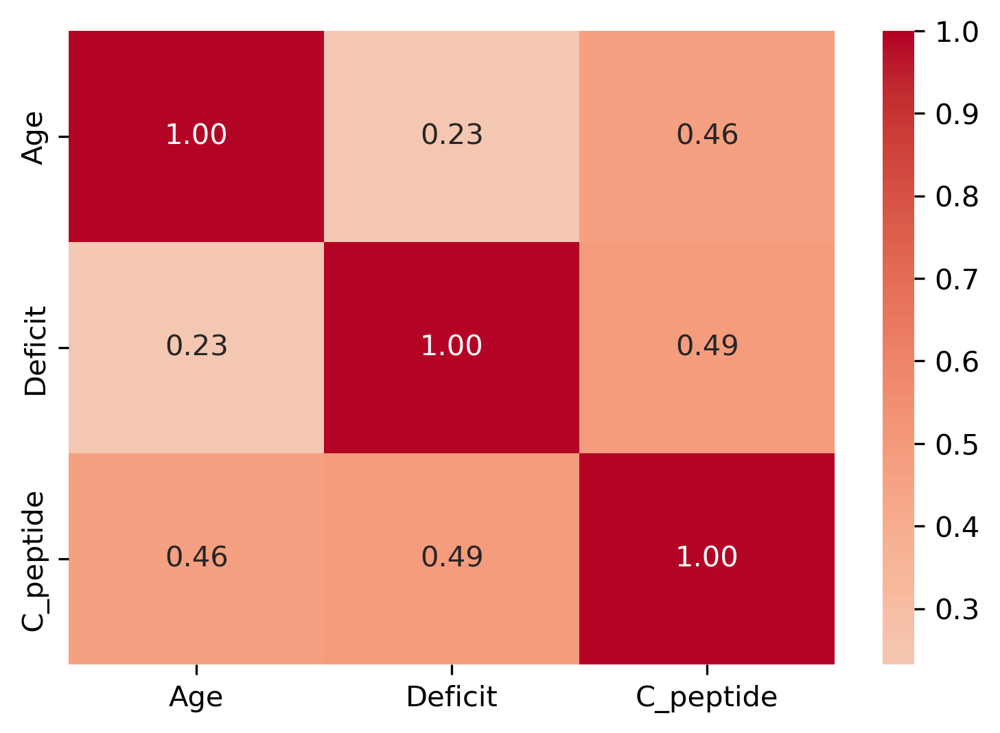
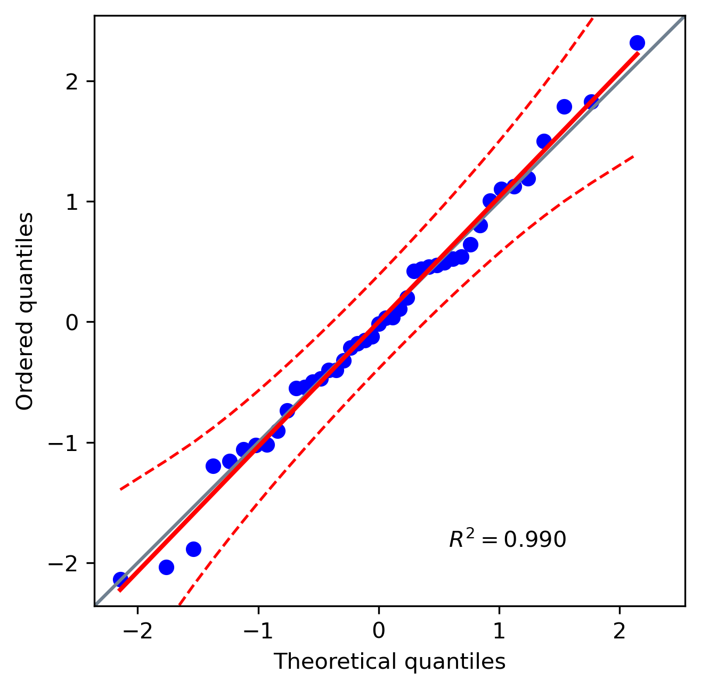
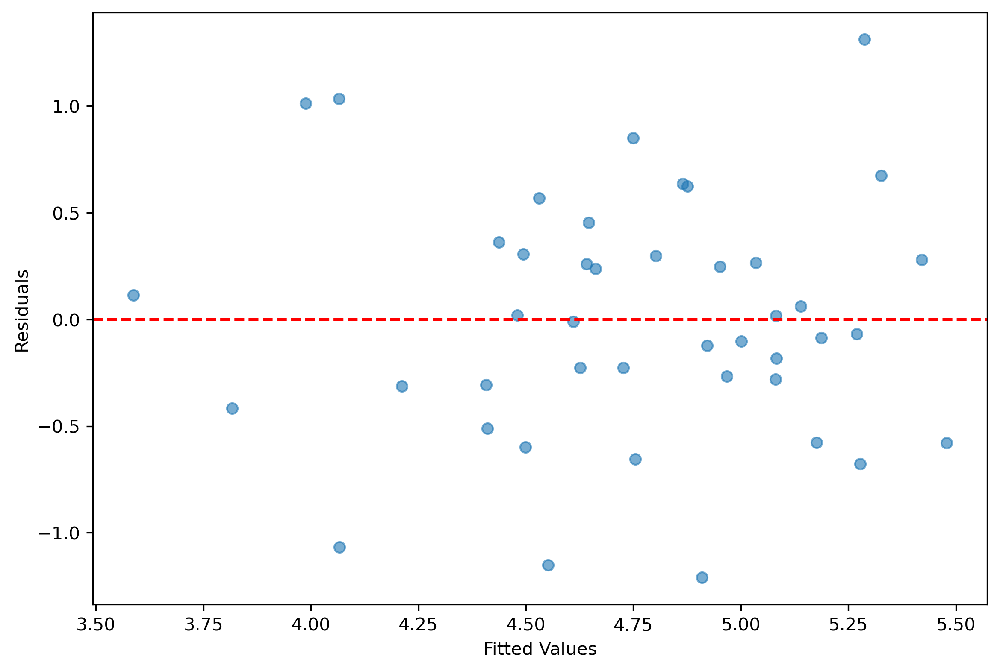

| Age | Deficit | C_peptide | |
|---|---|---|---|
| count | 43.000000 | 43.000000 | 43.000000 |
| mean | 9.032558 | -8.148837 | 4.746512 |
| std | 4.022539 | 7.123080 | 0.720565 |
| min | 0.900000 | -29.000000 | 3.000000 |
| 25% | 5.500000 | -12.700000 | 4.450000 |
| 50% | 10.400000 | -7.800000 | 4.900000 |
| 75% | 11.850000 | -2.000000 | 5.100000 |
| max | 15.600000 | -0.200000 | 6.600000 |
Regression Analysis of C-Peptide Dependence on Age and Base Deficit
Summary
This study analyzes a dataset of children who were recently diagnosed with Type 1 diabetes to understand what factors affect how much insulin their bodies can still produce. It uses a log transformation of C-peptide concentration as a measure of remaining insulin production and examines how it relates to child’s age and a measure of blood acidity called base deficit. Using regression analysis, the study explores whether older children and those who had less base deficit at diagnosis retained more natural insulin production. Using a linear regression analysis, we found that age and base deficit are both factors that are linked to C-peptide levels.
Introduction
Diabetes is a chronic disease in which the body is unable to properly regulate blood sugar. According to the World Health Organization (WHO), more than 830 million people worldwide, around one in ten people, live with diabetes (Organization 2024). It is also one of the top ten leading causes of death globally (Disease Control and Prevention 2025).
WHO says: “Diabetes causes blindness, kidney failure, heart attacks, stroke and lower limb amputation […] Neither its cause nor the means to prevent it are known” (Organization 2024).
Type 1 diabetes, also called insulin-dependent diabetes, is a more serious form that usually starts in childhood. In Type 1 diabetes, the pancreas stops producing insulin, a hormone that allows sugar to move from the blood into the body’s cells. Without insulin, blood sugar rises to dangerous levels, and people need insulin injections to survive.
When children are first diagnosed, not all of them have completely lost the ability to produce insulin. Children who retain some natural insulin production have easier time managing the disease. This raises an important question: What factors influence how much insulin a child’s body is still able to produce at diagnosis?
For this study, we will specifically investigate the factors of age and base deficit. To answer this, we analyzed a dataset containing three measurements taken at or around the time of diagnosis:
- C-peptide level: A substance released in equal amounts to insulin. If C-peptide is present, it means the body is still producing some insulin.
- Age: According to previous research, age may be an important factor in explaining why some retain ability to produce small amounts of insulin.
- Base deficit: A measure of how acidic the blood is. Higher acidity means the child was more ill at diagnosis.
The goal of this study is to determine how age and base deficit relate to C-peptide levels, which reflect the amount of insulin the pancreas is still making. Regression analysis is used to model how these predictors influence the log-transformed C-peptide concentration. This may help to understand the factors behind residual insulin production in children.
Question:
When studying patterns of insulin-dependent diabetes mellitus in children, is there a relationship between levels of serum C-Peptide and the factors of patient age and base deficit?
Data Source:
KEEL Diabetes Data Set: Extraction based on Evolutionary Learning (2018)
The data was sourced from KEEL (Knowledge Extraction based on Evolutionary Learning), which is an open source software tool containing datasets that can be used for knowledge data discovery. The chosen dataset is designed for regression analysis, taken from LIACC’s repository. The objective of this data is to investigate how factors such as patient age and base deficit (a measure of metabolic acidosis) are associated with concentration of C-peptide, in order to further understand patterns of insulin-resistant Diabetes Mellitus in children.
Data Structure:
Age: Patient Age, domain: [np.float64(0.9), np.float64(15.6)]
Deficit: Base Deficit, measure of acidity, domain: [np.float64(-29.0), np.float64(-0.2)]
C-peptide: Logarithm of C-Peptide concentration (pmol/ml), domain: [np.float64(3.0), np.float64(6.6)]
Methods
Multiple linear regression was used to model the relationship of age and base deficit to logarithm of C-peptide concentration in patients. The Python programming language (Van Rossum and Drake 2009) was used to perform the analysis.
Download Data into data/ directory
This code was adapted from Microsoft Copilot prompts: ‘Use Python to download a data file from a download link into a directory, as a csv’.
Data Wrangling and Cleaning
- original file downloads as .dat, ensure it fits with a .csv format by splitting with the ‘,’ delimiter and stripping lines beginning with ‘@’
- re-name columns since names were stripped away
- ensure data is the correct dtype
Note: dtypes were set to float manually as they were downloaded as dtype: object
Data Integrity Check
Before running the full Deepchecks data integrity suite, the dataset was first validated for basic data quality to ensure a reliable foundation. These preliminary checks included:
- Correct column names (verifying that all required columns such as Age, Deficit, C_peptide are present.)
- No empty observations (confirming that there are no fully empty rows in the dataset.)
- Missingness not beyond expected threshold (ensuring that no column has more than 5% missing values.)
These checks were implemented using Python and Pandera, allowing the dataset to pass basic validation before deeper analysis.
Following these initial validations, the full Deepchecks data integrity suite was run, which further validated the data against checks such as: - correlations between features/explanatory variables - correlations between features - data types - single value observations - non-mixed nulls - string mismatches
Note that checking category levels is irrelevant as dataset does not contain categorical variables. This validation suite also checks target distribution, as this analysis is running a regression test on non-split data.
EDA
<class 'pandas.core.frame.DataFrame'>
RangeIndex: 43 entries, 0 to 42
Data columns (total 3 columns):
# Column Non-Null Count Dtype
--- ------ -------------- -----
0 Age 43 non-null float64
1 Deficit 43 non-null float64
2 C_peptide 43 non-null float64
dtypes: float64(3)
memory usage: 1.1 KBNo null values, data types were set to float earlier
The mean patient age is approximately 9 years old, with the maximum age being approximately 16 and the minimum being 1. The C_peptide concentration average is about np.float64(4.75), mean Base Deficit value is np.float64(-8.15) mEq/L. The standard deviation of Base Deficit is quite high, at about np.float64(7.12) mEq/L, while the standard deviations of the other two variables are within a reasonable range for their domains. This high variance could be due to the small size of the dataset.



EDA Summary:
Both features are positively associated with the target variable, C_peptide, at approximately equal magnitudes (np.float64(0.46), np.float64(0.49)). The distribution of the target variable is approximately normal, with most values clustered around 5.0. There does seem to be one or two outliers in scatterplots comparing the relationship between Age and Deficit, but as these are both non-target features this can be ignored for the sake of this analysis. There are no obvious outliers in the relationship between the target and its predictors.
Modelling
We use linear regression to model the relationship between C_peptide and covariates Age and Deficit.
| Unnamed: 0 | names | coef | se | T | pval | r2 | adj_r2 | CI[2.5%] | CI[97.5%] | |
|---|---|---|---|---|---|---|---|---|---|---|
| 0 | 0 | Intercept | 4.479 | 0.271 | 16.533 | 0.000 | 0.368 | 0.337 | 3.932 | 5.027 |
| 1 | 1 | Age | 0.066 | 0.023 | 2.865 | 0.007 | 0.368 | 0.337 | 0.020 | 0.113 |
| 2 | 2 | Deficit | 0.041 | 0.013 | 3.116 | 0.003 | 0.368 | 0.337 | 0.014 | 0.067 |
Model Diagnostics
To check for Normality of residuals, we employ the Shapiro-Wilk test and Q-Q plot.
| Unnamed: 0 | W | pval | normal | |
|---|---|---|---|---|
| 0 | 0 | 0.988 | 0.927 | True |

To test for equal variance, we plot the residuals against the fitted values for the model.

DISCUSSION
Summary of Findings
The objective of this analysis was to determine if there is a linear relationship between serum C-peptide (log-transformed concentration, pmol/ml) and the factors of patient age (Age, years) and base deficit (Deficit, mEq/L) in children with insulin-dependent diabetes mellitus.
A multiple linear regression model (Table 3) yielded the following key findings:
Both predictor variables, Age (p = 0.007) and Deficit (p =0.003), were found to be statistically significant in predicting the C-peptide level (using a typical \(\alpha = 0.05\)). Age has a positive coefficient (coef =0.066), indicating that for every one-year increase in age, the log C-peptide concentration is expected to increase by 0.066 units, holding Deficit constant. Base deficit has a positive coefficient (coef =0.041), meaning that for every one \(\text{mEq/L}\) increase in Deficit, the log C-peptide concentration is expected to increase by 0.041 units, holding Age constant. (Note: Since Deficit values are negative, an increase (closer to 0) signifies less severe metabolic acidosis.)
The model achieved an adjusted \(R^2\) of 0.337. This means that approximately 33.7% of the variance in the log C-peptide concentration is explained by the patient’s age and base deficit.
When examining model assumptions, the diagnostic tests Table 4, Figure 4, and Figure 5, shows that the key linear regression assumptions of normally distributed residuals and equal variance are reasonably met. While it is more difficult to confirm whether the observations are independent, we will assume so here for the purposes of our analysis.
Expected Findings
The results showing that Age and Base Deficit are both positive predictors of C-peptide levels generally match what we expect in children with Type 1 Diabetes.
Since C-peptide reflects how much insulin the body can still produce, the positive relationship with age suggests that older children in this dataset tend to have more remaining beta-cell function at the time of measurement. This is reasonable because some older children may lose beta-cells more slowly, or may still be in an early stage of the disease when some insulin production is preserved.
The positive effect of base deficit here means that higher C-peptide levels are linked to a less severe Deficit (meaning a less severe case of DKA). This fits existing medical understanding: children who still produce some insulin are less likely to arrive with very severe metabolic disturbances compared to those whose beta-cells are almost fully destroyed (Novac 2023). The one surprising part of the results is the low R² value (0.337). Even though the model is statistically significant, it explains only a portion of the differences in C-peptide levels. This suggests that other factors, such as how long the child has had symptoms, their genetic markers, autoantibody levels, or initial glucose and HbA1c—also play important roles and should be included in future analyses.
Impact of Findings
These results have several important implications for children with Type 1 diabetes:
One is prognostic value: Because C-peptide is a strong indicator of long-term diabetes outcomes (such as the risk of low blood sugar and future complications), this analysis suggests that a child’s Age and Deficit at diagnosis can serve as easy-to-use markers for predicting how well they might manage the disease over time.
The findings also show that the onset of Type 1 diabetes is not the same for all children. Those who are a bit older and arrive with less severe metabolic problems (a less negative Deficit) appear to belong to a group that still has better remaining insulin-producing ability.
Knowing how Age and Deficit relate to C-peptide can help doctors tailor treatments more effectively. For example, children with higher predicted C-peptide levels might be better candidates for therapies designed to protect or support the remaining beta cells, since they already have some preserved function.
Finally, the strong link between Deficit and C-peptide supports the idea that C-peptide is a reliable indicator of how severe insulin loss is at the time a child is diagnosed (Maffeis 2020).
Future Questions for Further Research
The results from this model raises several important follow-up questions:
Non-Linear Effects and Interactions: Is the relationship between Age, Deficit, and C-peptide more complicated than a straight line? For example, does the effect of Deficit on C-peptide change depending on the child’s age, or would adding curved (quadratic) terms improve the model?
Longitudinal Data: Since this dataset is cross-sectional, we only see one point in time. How would the predictive power of Age and Deficit change if we tracked children over several years to see how quickly their C-peptide levels decline after diagnosis?
Adding More Predictors: Considering that the current model explains only about 34% of the variation, what extra value would we gain by including other medical factors—such as genetic markers (HLA types), autoantibodies, or initial blood glucose/HbA1c levels?
Effect of Transformations: Since our current model uses a log transformation of C-peptide. How would the results change if we modeled the raw (untransformed) C-peptide values?
References
Disease Control, Centers for, and Prevention. 2025. “FASTSTATS - Leading Causes of Death.” Centers for Disease Control and Prevention. https://www.cdc.gov/nchs/fastats/leading-causes-of-death.htm.
Extraction based on Evolutionary Learning, KEEL (Knowledge. 2018. “FASTSTATS - Leading Causes of Death.” Knowledge Extraction based on Evolutionary Learning KEEL. https://sci2s.ugr.es/keel/dataset.php?cod=45.
Maffeis, Tomasselli, C. 2020. “Nutrition Habits of Children and Adolescents with Type 1 Diabetes Changed in a 10 Years Span.” Pediatric Diabetes. https://pubmed.ncbi.nlm.nih.gov/32418262/.
Novac, Mihai, C. N. 2023. “Changes in c-Peptide Values in Children with Type 1 Diabetes—a Three-Year Study.” National Institurte of Health. https://doi.org/10.26574/maedica.2023.18.2.182.
Organization, World Health. 2024. “Diabetes.” Centers for Disease Control and Prevention. https://www.who.int/news-room/fact sheets/detail/diabetes.
Van Rossum, Guido, and Fred L. Drake. 2009. “Python 3 Reference Manual.” CreateSpace.